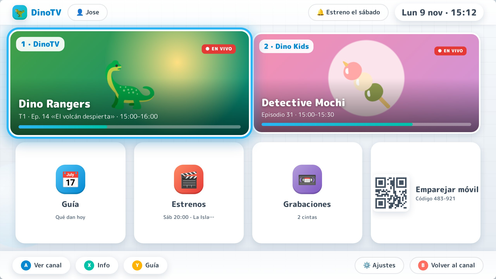
¿Recuerdas llegar a casa y saber que a las 4 de la tarde daban tu caricatura favorita? ¿Ver una promo de una película y contar los días hasta el sábado? DinoTV convierte tu colección de series y películas en un canal de televisión que nunca se detiene.
| Equipo | Requisito |
|---|---|
| Caja DinoTV (recomendado) | Mini-PC Intel N100 o Raspberry Pi 5 conectado al televisor por HDMI |
| o un PC | Windows 10+, macOS 13+ o Linux (para el modo Media Center) |
| Móvil | Android 8.0 o superior, en la misma red Wi-Fi |
| Contenido | Tus archivos de video (mkv, mp4, avi, webm) en un disco o carpeta de red |
| Control | Teclado, control de TV (HDMI-CEC, FINAL), gamepad o la app móvil |
.deb, .exe o .dmg).S01E02 o 1x02: el asistente las ordenará solo.Puedes emparejar varios móviles. En FINAL podrás asignar perfiles: Administrador (cambia la parrilla) o Solo ver.
Al pulsar Menú, el canal sigue emitiéndose en su mosaico: la televisión nunca se detiene. Mueve el foco con las flechas; el mosaico seleccionado crece y brilla en celeste.
| Botón | Acción |
|---|---|
| A / OK | Abrir / ver el canal seleccionado |
| B / Atrás | Volver al canal en vivo |
| X / Info | Mostrar información del programa |
| Y / Guía | Abrir la guía de programación |
| CH+ / CH− | Cambiar de canal |
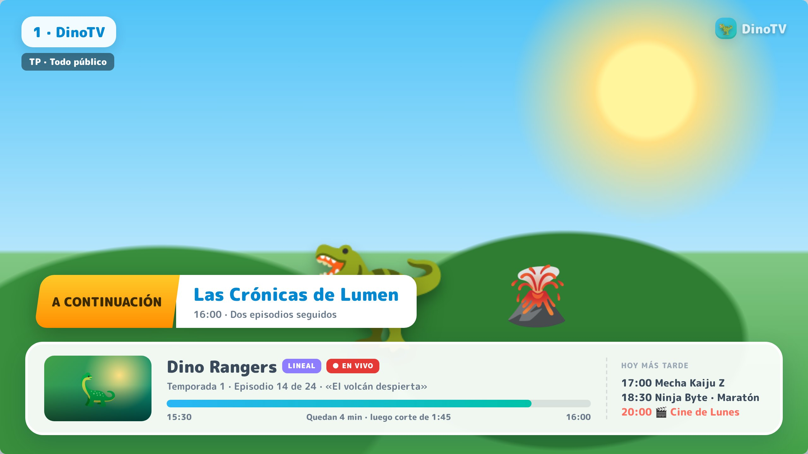
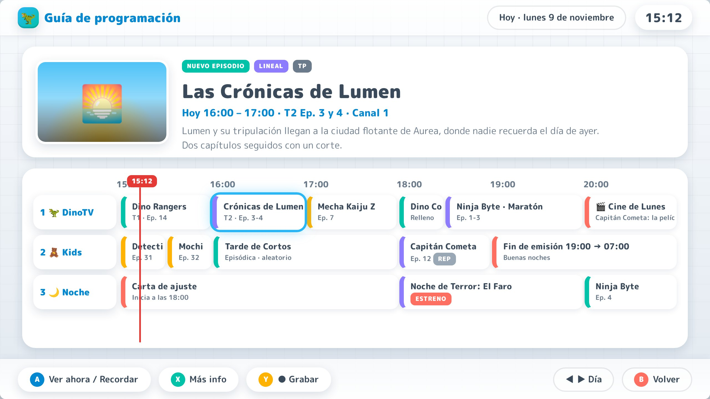
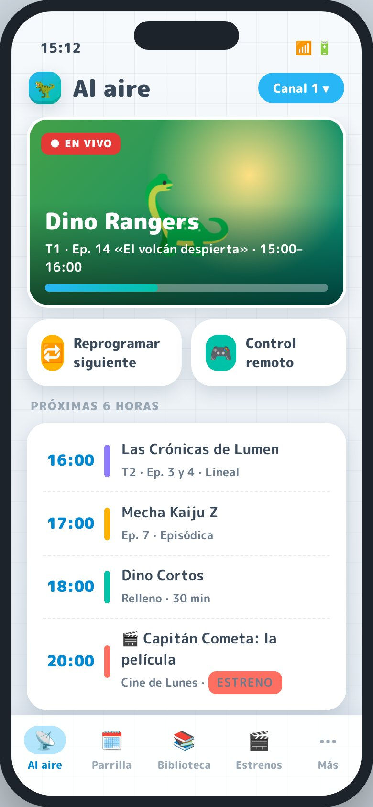
Es la pantalla de inicio de la app. Muestra:
Cambia de canal con el selector de la esquina superior.
| Pestaña | Para qué sirve |
|---|---|
| 📡 Al aire | Qué se emite y qué sigue |
| 🗓️ Parrilla | Editar la programación semanal |
| 📚 Biblioteca | Series, películas, wizard |
| 🎬 Estrenos | Películas y especiales anunciados |
| ⋯ Más | Promos, canales, control remoto, ajustes |
La parrilla muestra la semana con un bloque de color por programa.
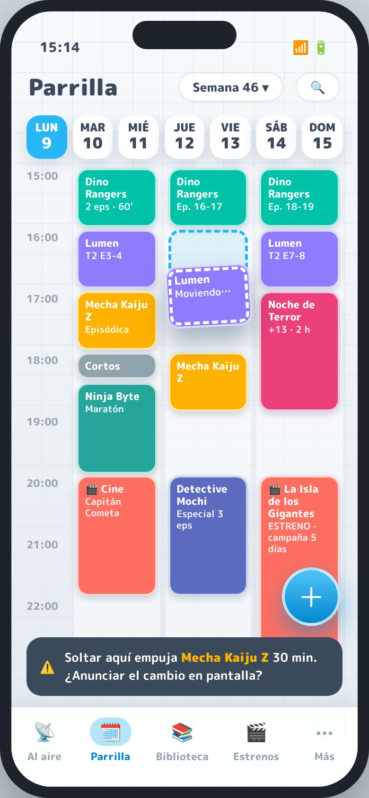
| Tipo | Cómo se emite | Ideal para |
|---|---|---|
| Lineal | En orden estricto, un capítulo tras otro. DinoTV recuerda en qué capítulo va. | Anime con historia continua, series con temporadas |
| Episódica | En orden aleatorio, sin repetir hasta haber pasado todos. | Caricaturas, comedias, cortos |
| Mixta | Aleatoria, pero los arcos marcados se emiten completos y en orden. | Series con «arcos» de varios episodios |
DinoTV calcula el tiempo sobrante y lo rellena con continuidad: cortinilla, promo de «A continuación», promos de la semana, tus anuncios y el logo del canal. El último segundo se ajusta con un cartón animado para que el siguiente programa empiece exactamente a su hora.
| Opción | Qué hace |
|---|---|
| Recortar créditos (por defecto) | Acorta los créditos finales lo necesario |
| Quitar el último episodio | Se emite en el siguiente bloque (no se pierde) |
| Empujar el siguiente | Retrasa lo que viene después |
| Permitir que se pase | Útil para películas largas |
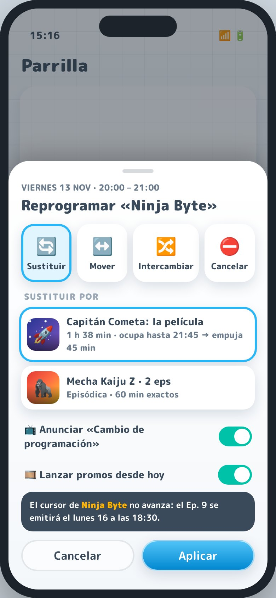
Reprogramar cambia una emisión concreta sin tocar el horario habitual.
| Acción | Uso |
|---|---|
| 🔄 Sustituir | Poner otra serie o una película en ese bloque |
| ↔️ Mover | Pasar el bloque a otra hora o día |
| 🔀 Intercambiar | Cambiar dos bloques entre sí |
| ⛔ Cancelar | Quitar la emisión (se llena con relleno) |
Activa «Anunciar cambio de programación» para que la TV muestre un aviso, como hacían los canales de verdad. Puedes reprogramar lo que viene después incluso mientras se emite el programa actual.
El asistente te guía para agregar contenido y dejarlo programado en un par de minutos. Ábrelo desde Biblioteca → ＋.
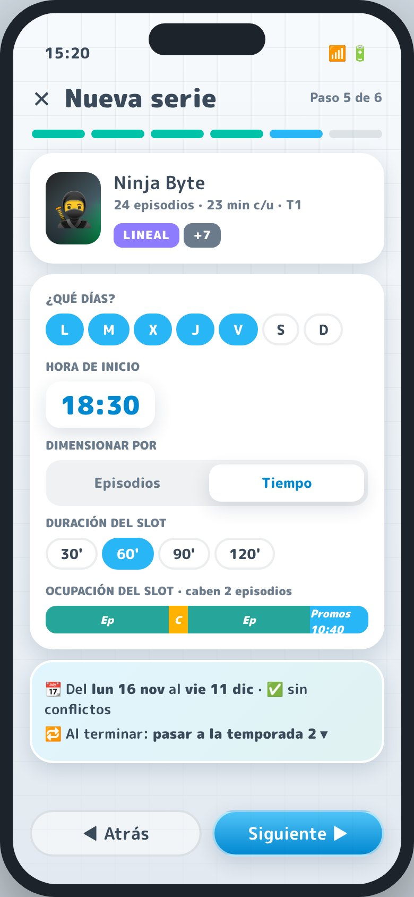
| Opción | Resultado |
|---|---|
| Repetir | Vuelve al capítulo 1 con la insignia REPETICIÓN |
| Siguiente temporada | Continúa con la temporada siguiente si existe |
| Retirar | El bloque pasa a relleno y la app te pide un reemplazo |
| Sustituir | Otra serie ocupa el horario, con promo «¡Nueva serie!» |
Elige el archivo, completa los datos y decide cuándo: como Estreno (un día y hora únicos), en un Ciclo (por ejemplo «Cine de los lunes») o solo en la biblioteca. Si la película es más larga que el bloque, el asistente te propone soluciones.
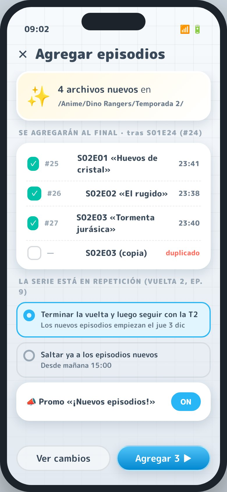
Cuando copias capítulos nuevos en la carpeta de una serie, DinoTV los detecta y la serie muestra la insignia «N nuevos» (y una notificación FINAL).
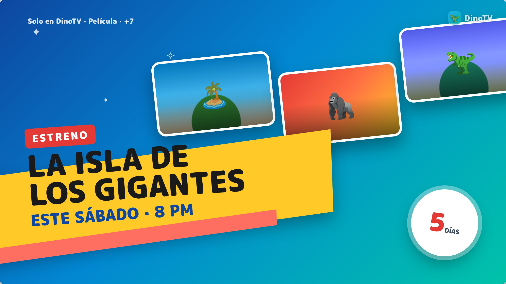
Durante la campaña, las promos aparecen cada vez más a menudo: «Este sábado 8 PM» → «Mañana» → «Hoy 8 PM» → «En minutos». En la etapa Beta las promos usan póster, texto y música; en la FINAL incluyen clips del propio contenido, elegidos sin destripar el final, y voz de locutor.
Desde Más → Continuidad puedes ver las promos generadas, agregar tus propios anuncios retro y elegir el paquete de identidad de cada franja (Clásico, Acción, Matiné, Nocturno, Halloween, Navidad).
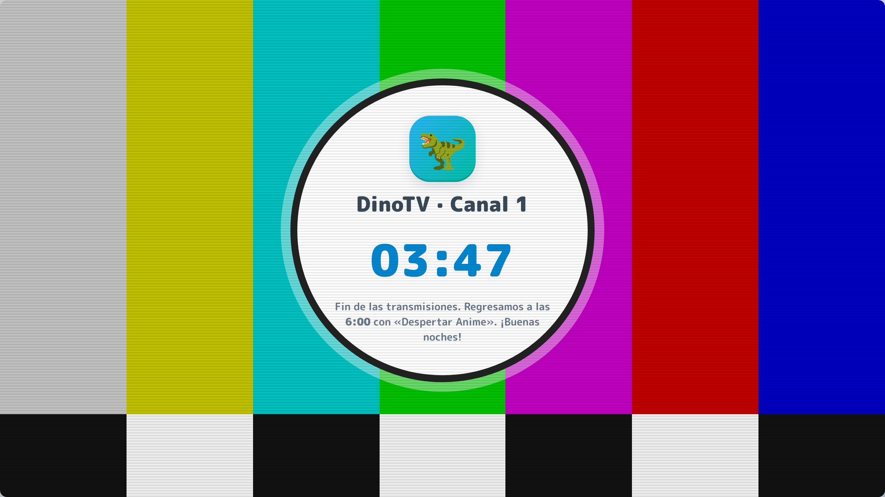
En Más → Canales puedes definir un horario de fin de emisión (por ejemplo, de 02:00 a 06:00). El canal se despide, muestra la carta de ajuste con la hora y regresa a la hora indicada con su secuencia de «Buenos días». Si no lo configuras, el canal emite las 24 horas (con repeticiones nocturnas si quieres).
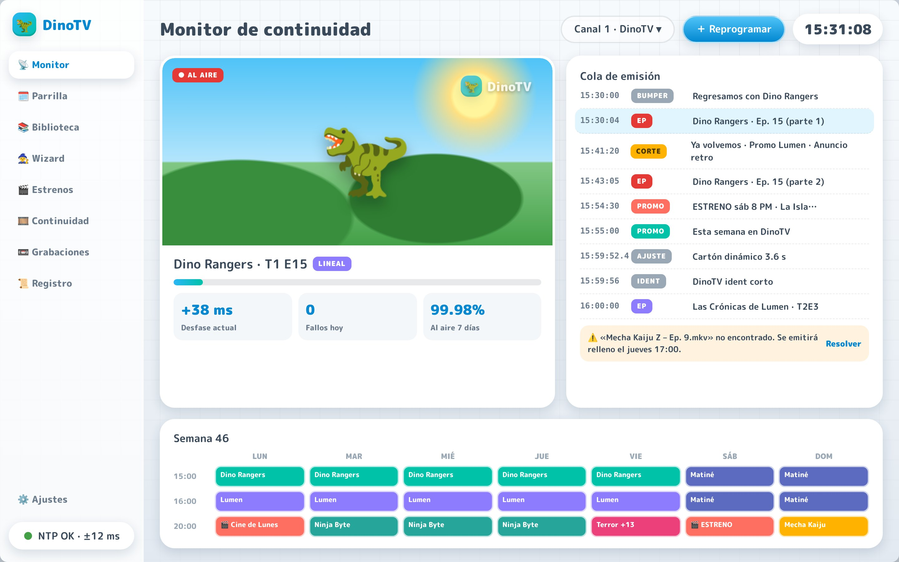
En un PC, DinoTV funciona como televisor y como «sala de control». El Monitor de continuidad muestra qué se emite, la cola exacta de lo que viene (episodios, cortes, promos y ajustes), el desfase respecto a la hora programada y las alertas (por ejemplo, un archivo que falta). Desde el panel lateral puedes editar la parrilla con el ratón, usar el wizard y ver el registro de emisión FINAL.
| Función | Beta | Final |
|---|---|---|
| Canal 24/7 a hora exacta, encendido a mitad de programa | ✔ | ✔ |
| Series lineales, episódicas y mixtas · películas · estrenos | ✔ | ✔ |
| Parrilla, reprogramaciones y wizard desde Android | ✔ | ✔ |
| Relleno exacto, cortes, cortinillas, «A continuación» | ✔ | ✔ |
| Promos con póster y texto | ✔ | ✔ |
| Promos con clips, «Anteriormente en…», voz de locutor | — | ✔ |
| Varios canales simultáneos y zapping con estática | Uno al aire | ✔ |
| Filtro CRT / VHS, teletexto, ticker | — | ✔ |
| Cliente Android TV | — | ✔ |
| Media Center con administración completa | Básico | ✔ |
| Grabaciones VCR, recordatorios, votación «Tú decides» | — | ✔ |
| Perfiles, control parental, HDMI-CEC | — | ✔ |
Por defecto no: es televisión. Puedes activar el modo flexible FINAL, que permite pausar y desplaza el resto del día.
No. En las series lineales el capítulo pendiente pasa a la siguiente emisión.
Un ident del canal y el cartón «Volvemos enseguida» hasta el siguiente programa. La app te avisa para que lo resuelvas.
Al volver, DinoTV retoma la emisión en el punto exacto que corresponde a la hora actual.
En cada serie puedes elegir el idioma de audio y de subtítulos preferido.
No. Internet solo es opcional para sincronizar la hora y descargar pósters y sinopsis.
| Término | Significado |
|---|---|
| Parrilla | La programación semanal del canal |
| Franja | Bloque horario con nombre y estilo (Matiné, Anime…) |
| Cortinilla | Clip corto de «Ya volvemos» / «Regresamos con…» |
| Promo | Anuncio de un programa futuro con día y hora |
| Mosca | Logo del canal en la esquina de la pantalla |
| Append | Agregar capítulos nuevos al final de una serie |
| Relleno | Material que completa el tiempo hasta la siguiente hora exacta |
| Carta de ajuste | Imagen que se emite en el fin de emisión |